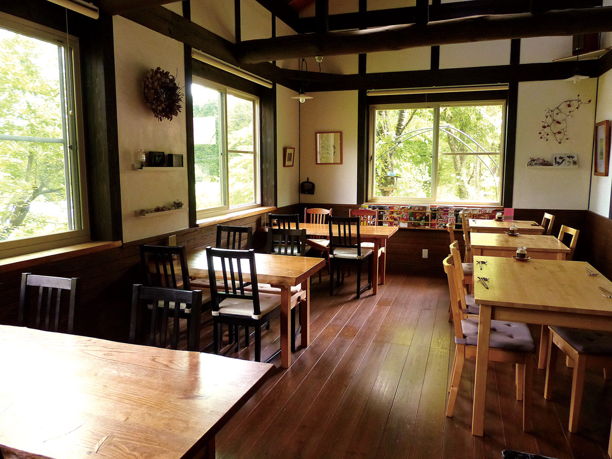
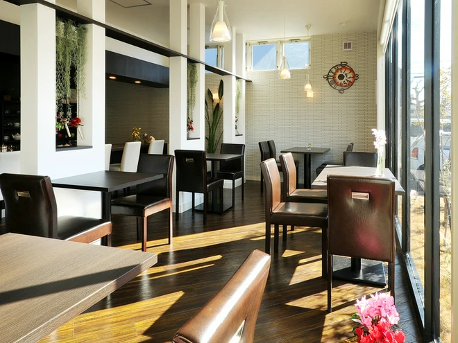
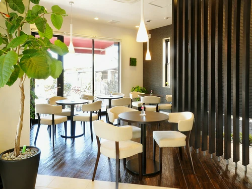

お店のご案内
「喫茶こもれび」は、店内に木のぬくもりを感じられる、静かで落ち着いた小さな喫茶店です。主な魅力はハンドドリップコーヒーと手作り焼き菓子。ひとりで読書をする人も、友人と穏やかに話す人も歓迎します。
本日のオススメ
季節のチーズケーキ（680円・税込）
濃厚なチーズの味わいと爽やかな酸味が広がる、コーヒーによく合う手作りケーキです。
営業概要
- 営業時間：10:00〜18:00
- 定休日：水曜日
- 場所：緑町1丁目3-5（緑町駅から徒歩7分）
- 駐車場：なし
木のぬくもりと、静かな時間が流れる場所。





「喫茶こもれび」は、店内に木のぬくもりを感じられる、静かで落ち着いた小さな喫茶店です。主な魅力はハンドドリップコーヒーと手作り焼き菓子。ひとりで読書をする人も、友人と穏やかに話す人も歓迎します。
季節のチーズケーキ（680円・税込）
濃厚なチーズの味わいと爽やかな酸味が広がる、コーヒーによく合う手作りケーキです。